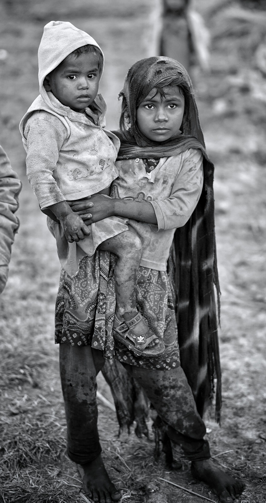
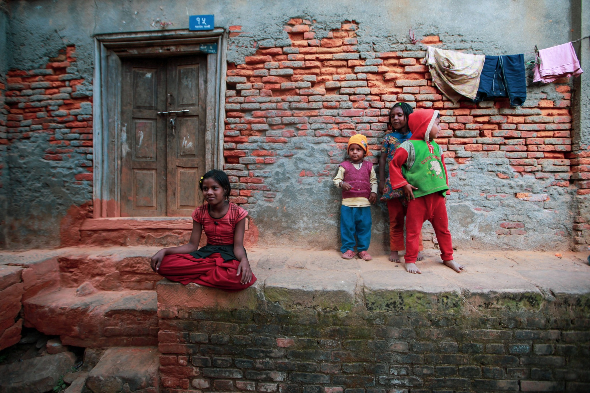

Child welfare & community opportunity
These photographs are contextual. Any future reporting involving children would require robust safeguarding, consent and privacy protections.



Original field photographs and interview-based material will be added following appropriate ethical approval, informed consent and safeguarding review. These images are included for visual context and are not represented as original field reporting.
The question
Education is often described as a route to opportunity, yet students may encounter very different conditions depending on where they live and what resources their families and schools can access. Reporting should examine those differences without reducing communities to stereotypes.
What reporting could explore
- School facilities, teacher availability and access to learning materials.
- Transport, connectivity, household responsibilities and other barriers to attendance.
- Students' own descriptions of their ambitions and constraints.
- Policies and programmes intended to narrow opportunity gaps.
Interview notebook
Questions for a future interview
What helps students continue learning when resources are limited? Which changes would students, teachers and caregivers prioritise? What local data can substantiate the challenges described?
Interview minors only with appropriate consent, safeguarding and guardian permissions. Protect identities where needed.